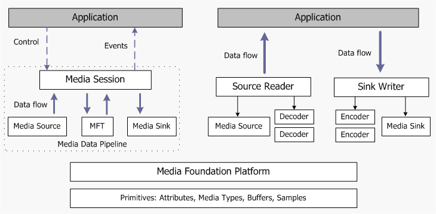

This topic describes the general design of Microsoft Media Foundation. For information about using Media Foundation for specific programming tasks, see Media Foundation Programming Guide.
The following diagram shows a high-level view of the Media Foundation architecture.

Media Foundation provides two distinct programming models. The first model, shown on the left side of the diagram, uses an end-to-end pipeline for media data. The application initializes the pipeline—for example, by providing the URL of a file to play—and then calls methods to control streaming. In the second model, shown on the right side of the diagram, the application either pulls data from a source, or pushes it to a destination (or both). This model is particularly useful if you need to process the data, because the application has direct access to the data stream.
Starting from the bottom of the diagram, the primitives are helper objects used throughout the Media Foundation API:
The Media Foundation Platform APIs provide some core functionality that is used by the Media Foundation pipeline, such as asynchronous callbacks and work queues. Certain applications might need to call these APIs directly; also, you will need them if you implement a custom source, transform, or sink for Media Foundation.
The media pipeline contains three types of object that generate or process media data:
Third parties can implement their own custom sources, sinks, and MFTs; for example, to support new media file formats.
The Media Session controls the flow of data through the pipeline, and handles tasks such as quality control, audio/video synchronization, and responding to format changes.
The Source Reader and Sink Writer provide an alternative way to use the basic Media Foundation components (media sources, transforms, and media sinks). The source reader hosts a media source and zero or more decoders, while the sink writer hosts a media sink and zero or more encoders. You can use the source reader to get compressed or uncompressed data from a media source, and use the sink writer to encode data and send the data to a media sink.
[!Note]
The source reader and sink writer are available in Windows 7.
Â
This programming model gives the application more control over the flow of data, and also gives the application direct access to the data from the source.
Media Foundation: Essential Concepts
Â
Â